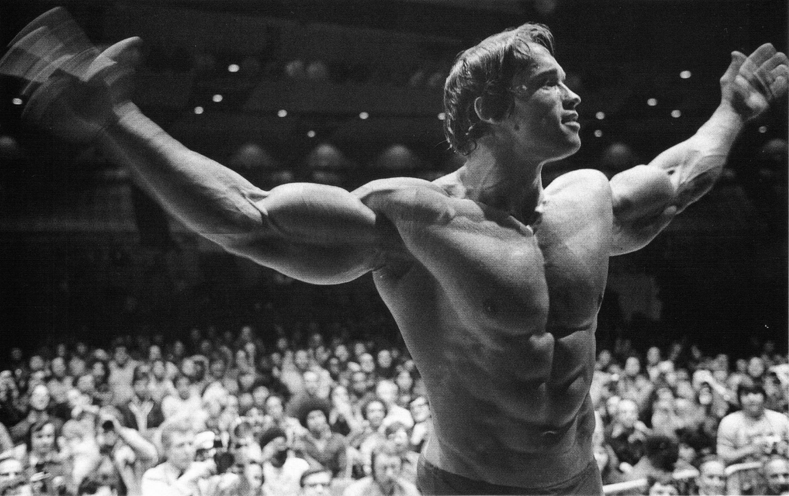

DIETA WCALE NIE MUSI BYĆ MĘCZARNIĄ! WSZYSTKO ZALEŻY OD TWOJEGO PODEJŚCIA I CELU. TO NIE TY JESTEŚ DLA DIETY, TYLKO ONA DLA CIEBIE!
Dieta
(z stgr. δίαιτα diaita – „styl życia”) – sposób odżywiania. Potocznie często używane nieprawidłowo, w stosunku do diet odchudzających.Termin dieta, stosowany w nauce o żywieniu człowieka ma różne znaczenia. Ogólnie wyróżnia się 4 rodzaje diet:
- dieta zwyczajowa (naturalna) – powszechny w danej społeczności sposób odżywiania się. W medycynie dietę tego rodzaju nazywa się dietą podstawową.
- dieta alternatywna – przyjęty w sposób świadomy sposób odżywiania się mający na celu rezygnację ze stosowania niektórych pokarmów i metod ich przygotowania (np. wegetarianizm). Do diet alternatywnych zalicza się również diety eliminacyjne.
- dieta lecznicza, dieta terapeutyczna – żywienie, w którym z przyczyn zdrowotnych zmodyfikowano podaż składników energetycznych i substancji odżywczych. Diety tego rodzaju są niezbilansowane w stosunku do potrzeb żywieniowych zdrowego człowieka ale ich okresowe stosowanie ma uzasadnienie terapeutyczne. W medycynie pod nazwą dieta rozumie się dietę leczniczą.
- dieta doświadczalna – specjalnie skomponowane pożywienie wykorzystywane w badaniach żywieniowych, które mogą być prowadzone na zwierzętach laboratoryjnych lub ludziach.
Wyróżnia się również dietę modyfikowaną lub inaczej dietę podstawową modyfikowaną. Jest to dieta, która zawiera wszystkie składniki odżywcze i energetyczna ale zmieniona jest jej konsystencja na przykład: dieta papkowata, dieta płynna oraz dieta do żywienia przez zgłębnik lub przetokę.
Przyjęło się mówić, że dieta to jest coś strasznego. Jak ktoś jest na diecie to taka osoba nie czerpie z życia przyjemności. Zazwyczaj uważa się, że dieta to głodówka i jedzenie samej zieleniny. Nic bardziej mylnego! Chcesz schudnąć - po prostu stosujesz deficyt kaloryczny, a nie magię i głodówkę. Polega on na tym, że organizm do funkcjonowania potrzebuje określonej ilości kilokalorii. Jeżeli przykładowo Jan Kowalski dziennie potrzebuje dostarczyć około 2500kcal, to jeżeli z samego jedzenia dostarczy 2300kcal, to organizm brakujące kalorie pobierze z tkanki tłuszczowej, dzięki czemu chudniemy. Tak samo to działa w drugą stronę. Jeżeli Jan dostarczy organizmowi 200kcal za dużo, to organizm nie będzie miał co z tym zrobić więc odłoży tę nadwyżkę w formie tłuszczu, dlatego tyjemy. Prosty mechanizm, którego ludzie nie chcą poznać, a który moim zdaniem warto wiedzieć by móc operować swoją wagą w sposób, w jaki nam będzie wygodnie. Najważniejszą jednak rzeczą jest to, że dietą mogą być batony, pizze czy kebaby. Masz ochotę na lody? Śmiało! Jedz je. Czujesz, że dzisiaj zjadłbyś sobie kawał soczystego mięsa? Nic bardziej prostszego, po prostu sobie go zjedz! To, jak nasza dieta będzie wyglądać, czy będziemy na deficycie kalorycznym czy nadwyżce, zależy od nas. Fakt, czy będziemy się odżywiać zdrowo też zależy od nas. Po prostu żyjmy w zgodze ze swoimi potrzebami i czerpmy radość z życia, nawet redukując tkankę tłuszczową, bo dieta to nasz własny sposób odżywiania. Zdrowy czy niezdrowy - ważne, że jest on NASZ I CZUJEMY SIĘ Z NIM ŚWIETNIE. Jedną z najlepiej znanych osób, które bez stosowania diety (jak i regularnych, ciężkich treningów) nie osiągnęłyby sukcesu jest Arnold Schwarzenegger, którego zdjęcia możecie zobaczyć poniżej. 